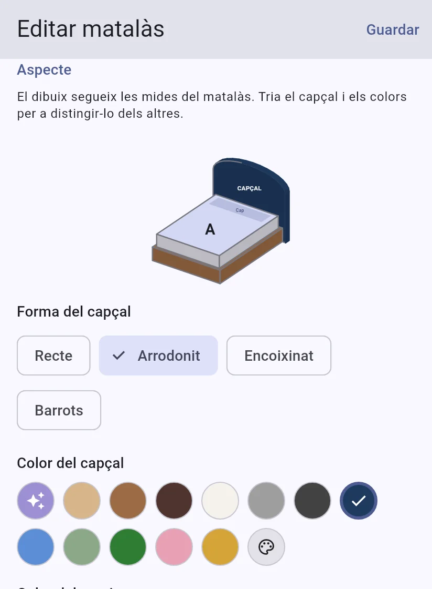
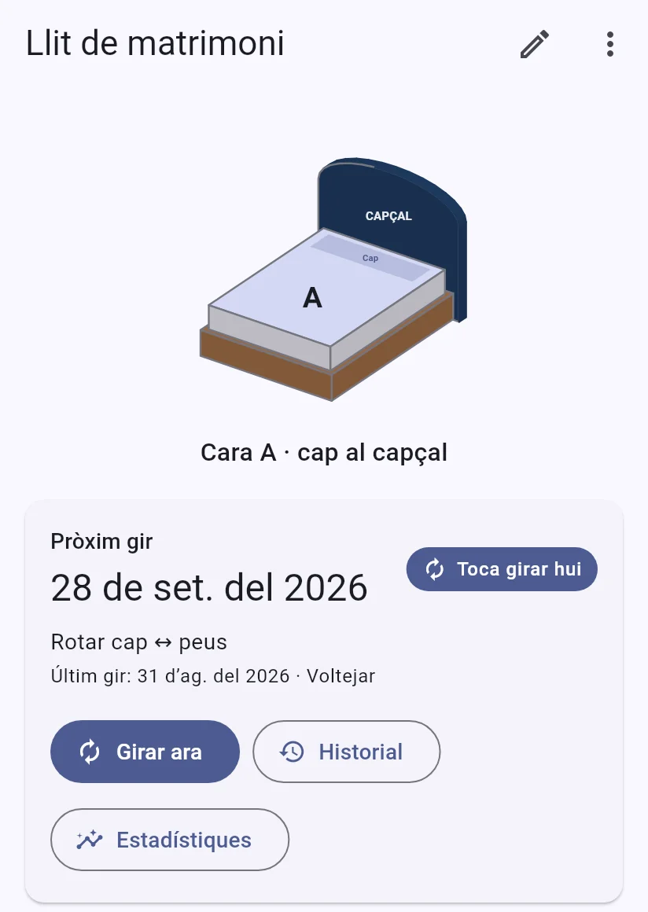
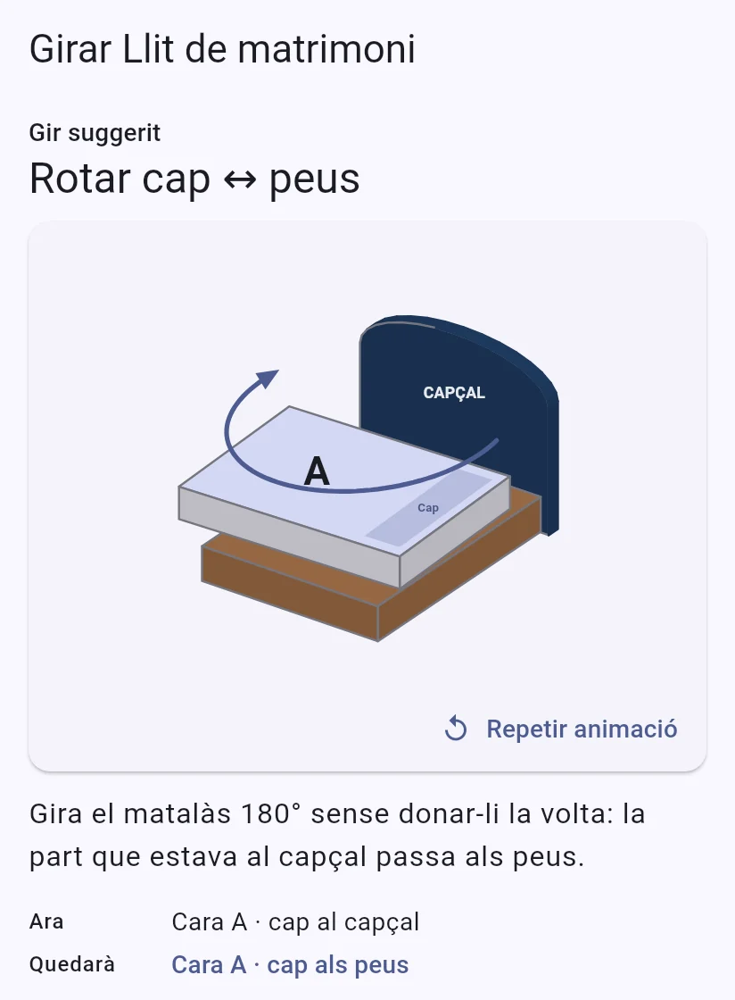
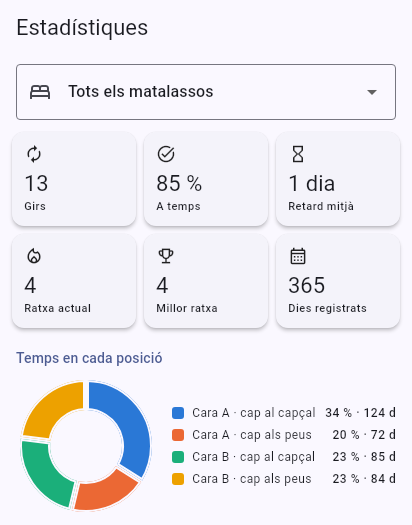
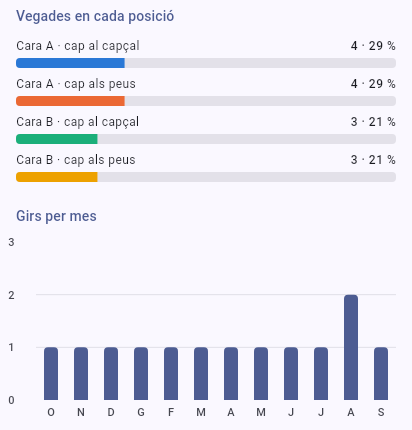

- 1
Descarrega l'arxiu des del mòbil en què la faràs servir.
- 2
Si Android t'ho demana, permet que el navegador instal·le aplicacions d'origen desconegut.
- 3
Si Play Protect avisa que l'app és desconeguda, prem «Més detalls» i després «Instal·la igualment».
- 4
Obri l'arxiu i prem Instal·la.
L'app no s'actualitza sola: les versions noves es publiquen ací. Quan estiga a Google Play podràs passar-t'hi sense desinstal·lar i sense perdre les teues dades.
Tres passos i t'oblides del calendari

1Afig el teu matalàs
Nom, mides i com es gira: només cap i peus, amb volteig o amb cara d'hivern i d'estiu.

2Rep l'avís
Cada setmana, cada mes o en canviar d'estació, a l'hora que tries. Si se't passa, t'ho recorda l'endemà.

3Gira i confirma
Una animació t'ensenya quin moviment toca. Ho confirmes i queda en l'historial.
Tot el que necessita un matalàs per a durar més
Avisos a la teua hora
Hora d'avís diferent per a cada matalàs i recordatori diari si no confirmes.
Rotar i voltejar, animat
L'app suggereix el moviment següent per a repartir el desgast entre les quatre posicions.
Cara d'hivern i d'estiu
Per a matalassos amb dues cares, t'avisa uns dies abans de cada canvi d'estació.
Garantia i vida útil
Guarda el tiquet i la garantia, i rep un avís abans que caduque.
Estadístiques
Quantes vegades has girat cada matalàs, amb quina puntualitat i quantes vegades ha estat en cada posició.
Còpies de seguretat
En un ZIP que pots xifrar i guardar en el teu núvol: Drive, OneDrive o Nextcloud.
Mira com cuides els teus matalassos
L'app porta el compte de cada gir i t'ensenya si el desgast es reparteix bé entre les quatre posicions, per a cada matalàs o per a tots junts.
- Girs fets i percentatge a temps
- Retard mitjà, ratxa actual i millor ratxa
- Dies que ha passat en cada posició
- Vegades en cada posició i girs per mes
Captures de l'app amb dades d'exemple d'un any.


Cada matalàs, amb el seu propi dibuix
El dibuix segueix les mides de cada matalàs. Tria la forma del capçal i els colors per a distingir el llit de matrimoni del de convidats d'un colp d'ull.


Les teues dades es queden al teu mòbil
Sense comptes ni registre. L'app funciona sense connexió i no envia les teues dades a cap servidor.
Llig la política de privacitat- Sense comptes, sense analítiques i sense seguiment
- Les còpies les comparteixes tu, on vulgues
- En castellà, català i anglés, amb tema clar i fosc
La teua marca és del sector del descans?
Arriba a persones que cuiden el seu matalàs just quan se'ls acaba la garantia o toca renovar-lo.